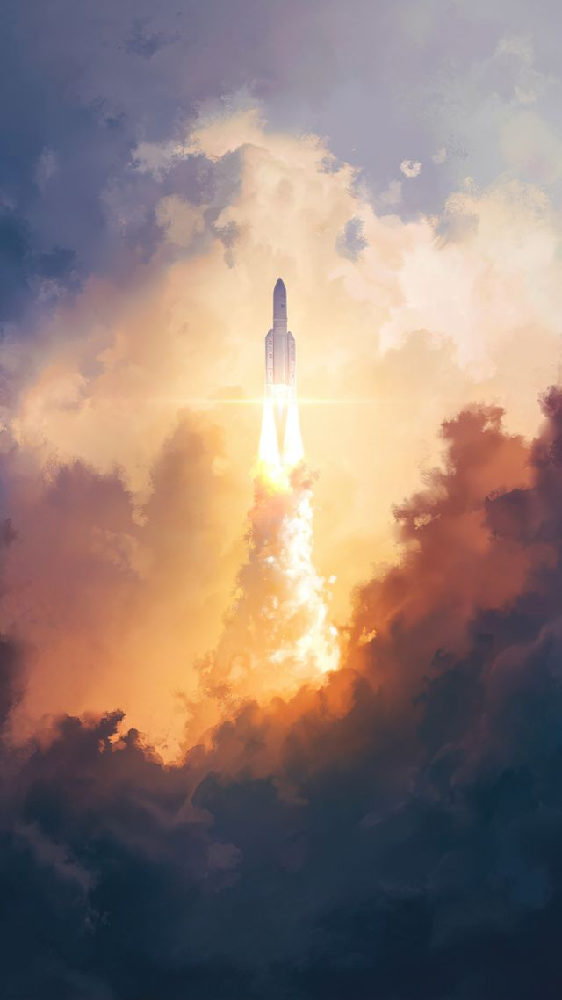

Welcome to Saturn/Return
We will take you to Saturn, and all the way back.

flight_takeoff
The ship was a billion years old, and it was
dying. The incalculable energies that had forced open the
metric to permit its passage were all but spent, and now the relentless quintessence was taking over
again: pulling the metric tighter, so that from instant to instant the needle-eye the ship tried to
thread was that much narrower, the forces pulling the ship apart that much stronger. Fields that could
have carried the ship intact through the event horizon of a stellar-mass black hole were tearing like
dry paper; decks and bulkheads built to withstand the heat and pressure at the heart of a star were
being ground away in a shower of exotic particles that decayed instantly to pure radiation and were
gone.